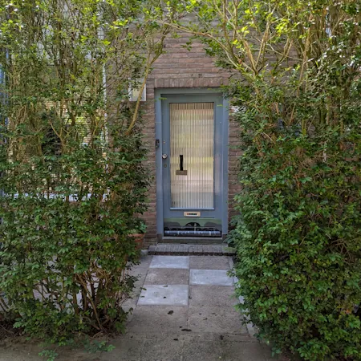
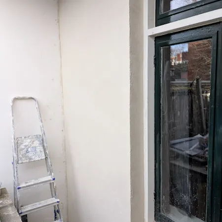
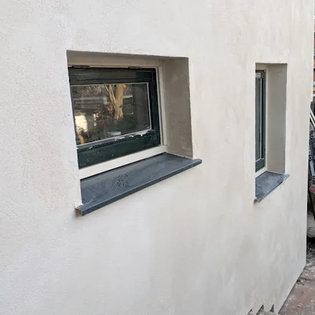

Ons werk
Van plan
naar opgeknapt.
Een kijkje in het werk van Mint. Echte foto’s van klussen in en om het huis.

Onderhoud in de tuin

Terras & toegang

Badkamer & sanitair

Een verzorgde entree

Wandafwerking

Werk aan de woning
Klik op een foto om deze groter te bekijken.
Samen aan de slag